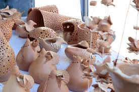

Cerâmica
Cerâmica para iniciantes.
Curso de Cerâmica para Iniciantes - 5 Módulos
Módulo 1: Introdução à Cerâmica
Apresentação do curso e dos materiais básicos necessários
Breve histórico da cerâmica e suas aplicações
Exploração das técnicas e processos cerâmicos básicos, como moldagem, modelagem e alisamento
Visão geral das ferramentas e equipamentos utilizados na cerâmica
Módulo 2: Preparação e Manipulação da Argila
Tipos de argila utilizados na cerâmica e suas características
Preparação da argila: umedecimento, peneiramento e amassamento
Técnicas de manipulação da argila: cilindragem, placagem, rolinho e modelagem manual
Apresentação de ferramentas para dar forma à argila, como estecas e espátulas
Módulo 3: Técnicas de Acabamento e Decoração
Técnicas de alisamento e polimento da superfície da cerâmica
Decoração com relevos, incisões e carimbos
Aplicação de esmaltes e engobes
Introdução à pintura cerâmica e técnicas de esmaltação
Módulo 4: Secagem, Queima e Vidragem
Processo de secagem da cerâmica e cuidados para evitar rachaduras
Conceitos básicos sobre queima e controle de temperatura
Apresentação dos tipos de fornos utilizados na cerâmica
Introdução à vidragem: tipos de vidrados, aplicação e efeitos
Módulo 5: Projetos Práticos
Desenvolvimento de projetos práticos, aplicando as técnicas aprendidas nos módulos anteriores
Orientação na execução dos projetos, com dicas e sugestões de aprimoramento
Discussão e análise das peças produzidas pelos alunos
Considerações finais, dicas para continuidade dos estudos e aprimoramento das habilidades em cerâmica
Lembre-se de que este é um curso básico de cerâmica, destinado a iniciantes. É importante praticar
regularmente e continuar a explorar diferentes técnicas e estilos para aprimorar suas habilidades. Aproveite
ao máximo o curso e divirta-se com a arte da cerâmica!